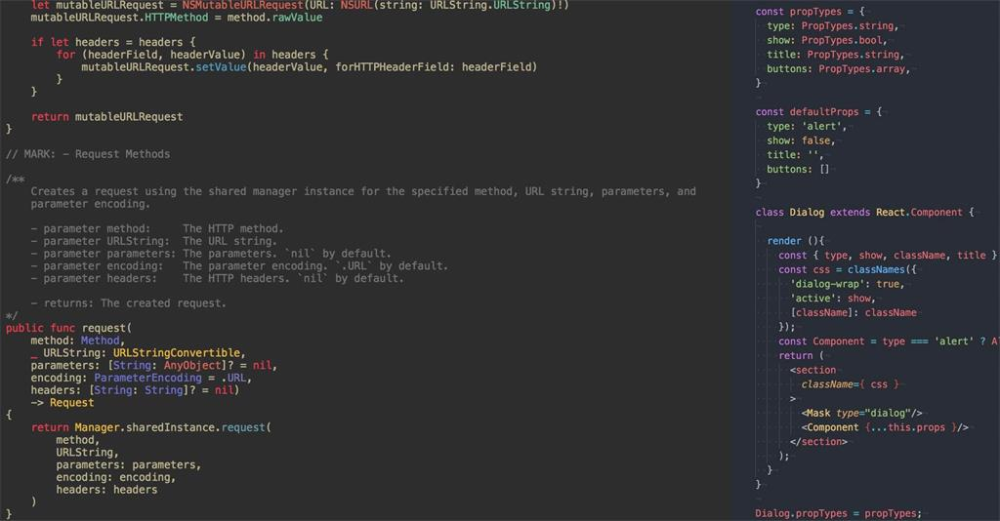

个人结合github上各位大神分享的资源进行了简单的汇总整理，每一个条目下面都有丰富的资料，是前端学习、工作的好帮手。

更新日志：
20160831：
- 增加前端学习路径
20160829：
- 增加100+ 超全的web开发工具和资源
- 增加Web前端开发规范文档
关于我： 微博: @青丰与名月
结合个人经历总结的前端入门方法
作者：qiu https://github.com/qiu-deqing
源地址：https://github.com/qiu-deqing/FE-learning
前端学习路径
作者： 余博伦 https://github.com/akira-cn
源地址：https://zhuanlan.zhihu.com/p/21935921
前端开发者手册(学习前端的实践手册)
作者：Pomy https://github.com/dwqs
源地址：https://github.com/dwqs/fedHandlebook
阅读地址：https://dwqs.gitbooks.io/frontenddevhandbook/content/
前端开发笔记本
作者：Li Xinyang https://github.com/li-xinyang
源地址：https://github.com/li-xinyang/FEND_Note
阅读地址：http://li-xinyang.gitbooks.io/frontend-notebook/
资源下载: PDF版
最全的资源教程——前端涉及的所有知识体系
作者：JadeYang https://github.com/nicejade
源地址：https://github.com/nicejade/Front-end-tutorial
100+ 超全的web开发工具和资源
译者：稀土区 https://xituqu.com/
源地址：https://xituqu.com/170.html
前端技能汇总
作者：Jackson Tian https://github.com/JacksonTian
源地址：https://github.com/JacksonTian/fks
Web前端开发技术栈
作者：Wilson Chen https://github.com/unruledboy
源地址：https://github.com/unruledboy/WebFrontEndStack
前端开发所使用语言的主流学习资源汇集指南
作者：icepy https://github.com/icepy
源地址：https://github.com/icepy/Front-End-Develop-Guide
GitHub上值得关注的前端项目
作者： trigkit4 https://github.com/hawx1993
源地址：https://github.com/hawx1993/github-FE-project
前端开发相关的优秀网站、博客、以及活跃开发者
作者：Luo Lei https://github.com/foru17
源地址：https://github.com/foru17/front-end-collect
国内知名 IT 公司前端团队 (排名不分先后)
作者：Mingdong Luo https://github.com/mdluo
源地址：https://github.com/mdluo/awesome-fe-team
关于程序员读书-大牛们的书单汇总
作者：Mingdong Luo https://github.com/mdluo
源地址：https://mdluo.github.io/blog/about-reading/
Github个人收集的优秀JavaScript项目
作者：Daiyichen https://github.com/Daiyichen
源地址：https://github.com/Daiyichen/Front-end-tutorial/blob/master/project.md
免费的计算机编程类中文书籍
作者：迷渡 https://github.com/justjavac
源地址：https://github.com/justjavac/free-programming-books-zh_CN
阅读地址：http://siberiawolf.com/free_programming/index.html
前端开发书签
作者：张正雄 https://github.com/zzxadi
源地址：https://github.com/zzxadi/frontend-dev-bookmarks
收集有趣的、富有交互的前端教程
作者：JiangShui Yu https://github.com/yujiangshui
源地址：https://github.com/yujiangshui/fun-front-end-tutorials
前端代码审查清单
作者：JiangShui Yu https://github.com/yujiangshui
源地址：https://github.com/yujiangshui/front-end-code-checklist
移动前端资源整理
作者：Ionic China https://github.com/IonicChina
源地址：https://github.com/IonicChina/Mobile-front-end-tutorial
Web前端开发规范文档
作者：kc https://github.com/kangcafe
源地址：https://github.com/kangcafe/web_develop_standard
适用于小团队的前端规范
作者：hzlzh https://github.com/hzlzh
源地址：https://github.com/hzlzh/Front-End-Standards
阅读地址：http://front-end-standards.com/
前端求职面试
关于程序员求职简历汇总（包含一些优秀简历示例）
作者：Mingdong Luo https://github.com/mdluo
源地址：https://mdluo.github.io/blog/about-resume/
关于前端面试文章汇总
作者：Mingdong Luo https://github.com/mdluo
源地址：https://mdluo.github.io/blog/about-front-end-interview/
前端面试问题集锦
作者： trigkit4 https://github.com/hawx1993
源地址：https://github.com/hawx1993/Front-end-Interview-questions
前端工作面试问题
作者：H5BP https://github.com/h5bp
中文版作者：Liu Chao https://github.com/lc-soft
源地址：https://github.com/h5bp/Front-end-Developer-Interview-Questions
收集的前端面试题和答案
作者：qiu https://github.com/qiu-deqing
源地址：https://github.com/qiu-deqing/FE-interview
声明： 版权归原作者所有，我只是搬运工。
代码贡献者：
头图来源：课多周刊